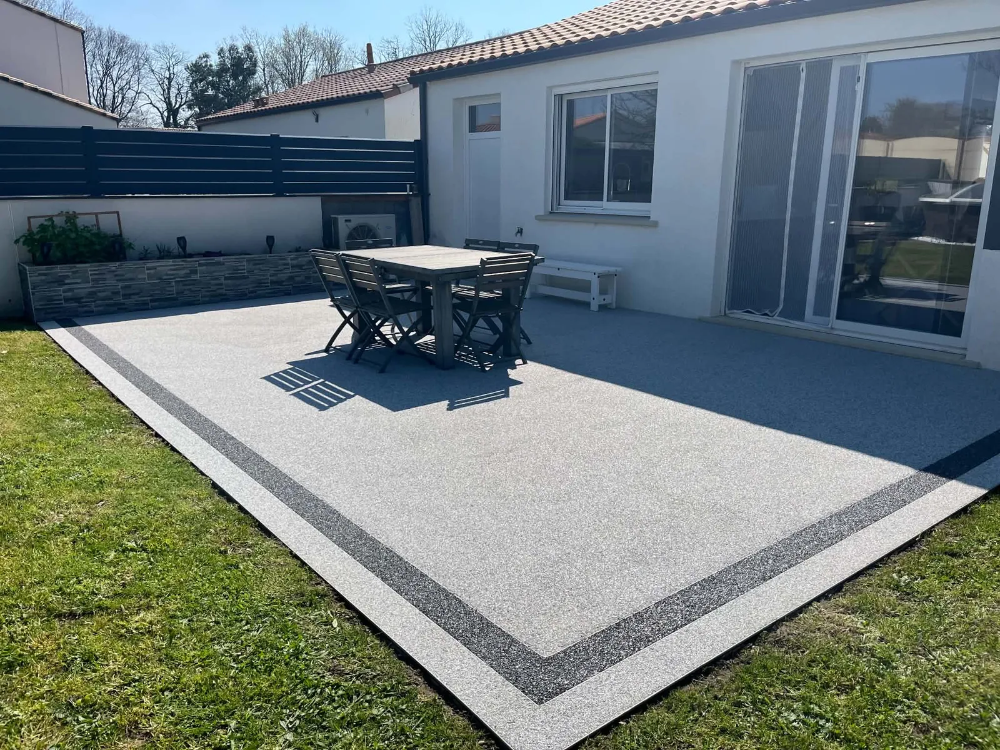
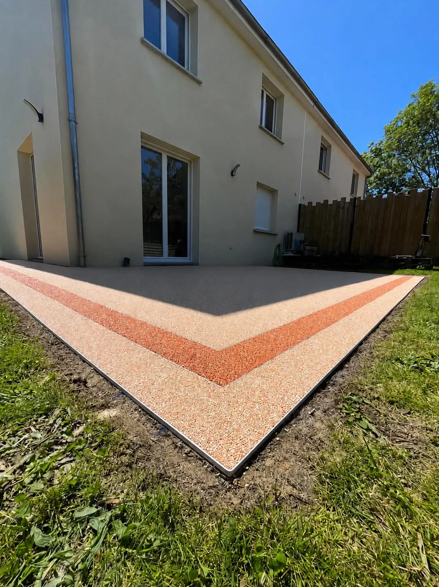
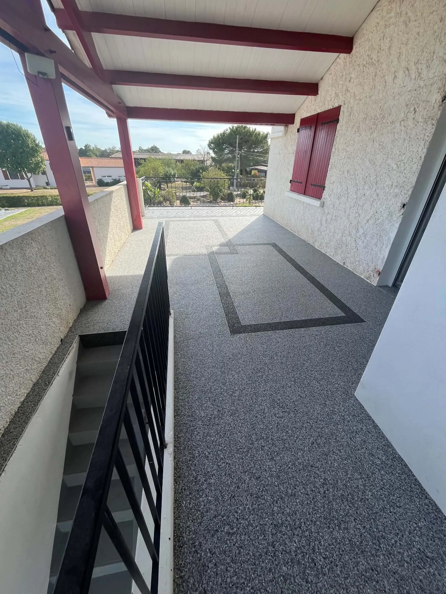
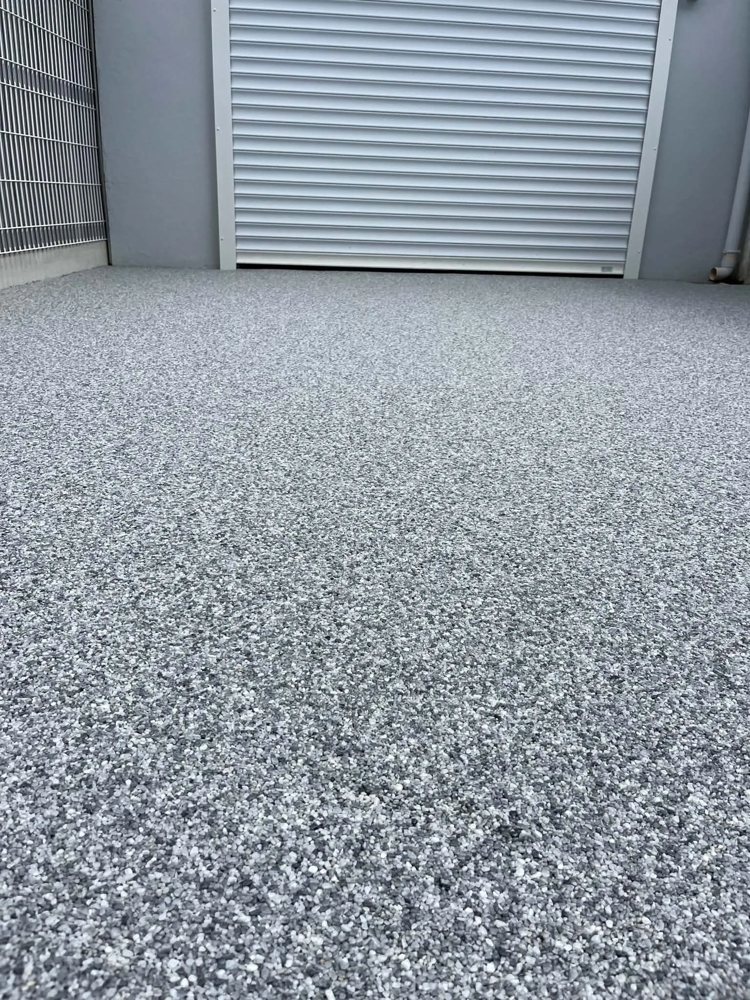
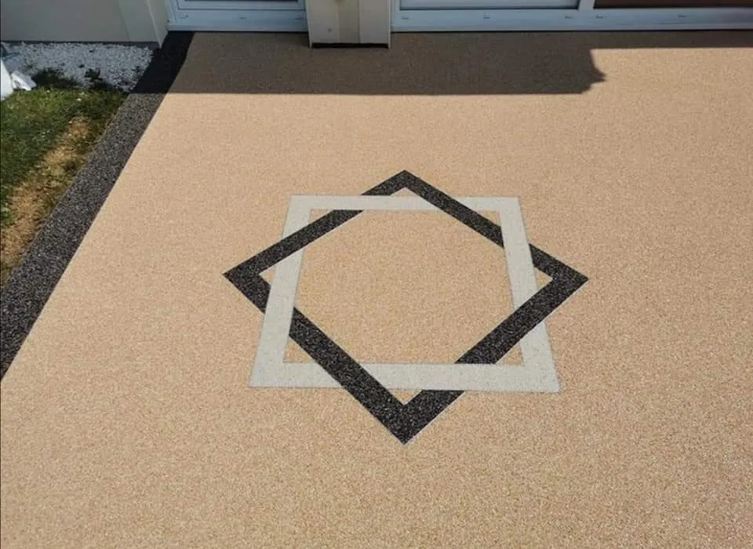
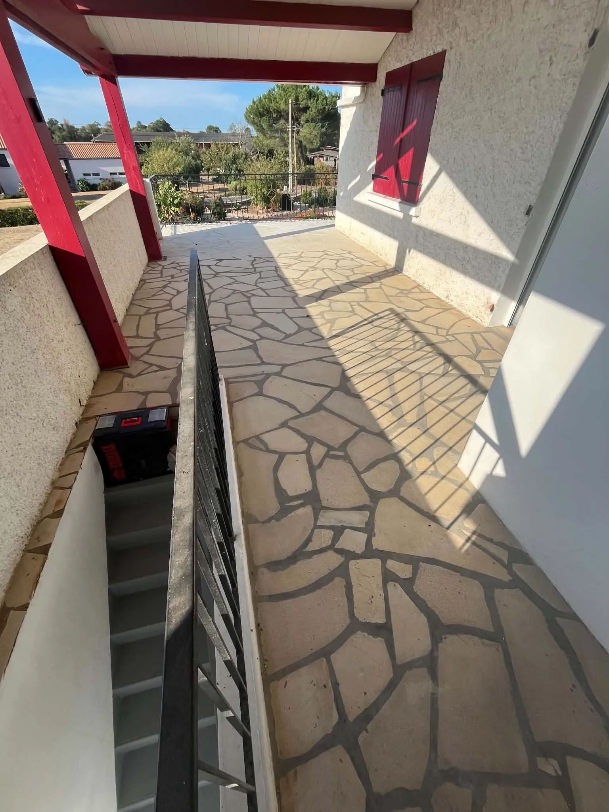

La moquette de pierre, l’élégance au service de vos extérieurs
Sublimez vos espaces extérieurs avec un revêtement à la fois raffiné, durable et entièrement personnalisable.




La moquette de pierre associe la beauté naturelle des granulats de pierre à une résine spécialement adaptée pour créer une surface élégante et contemporaine.
Terrasse, plage de piscine, escalier, balcon ou allée : chaque réalisation est pensée pour s’intégrer harmonieusement à votre environnement et mettre en valeur votre propriété.

Une finition unique, pensée pour votre extérieur
Chaque projet mérite une attention particulière. Nous vous accompagnons dans le choix des couleurs, des granulats et des finitions afin de créer un résultat en parfaite cohérence avec l’architecture de votre maison et vos envies.
L’objectif : obtenir un extérieur esthétique, harmonieux et durable, avec une finition soignée jusque dans les moindres détails.
Notre savoir-faire, étape par étape
-
01
Étude de votre projet
Nous échangeons avec vous afin de comprendre vos attentes, d’étudier votre espace et de définir la solution la plus adaptée.
-
02
Préparation du support
Une pose de qualité commence par une préparation rigoureuse. Le support est contrôlé et préparé afin de garantir les meilleures conditions pour la réalisation.
-
03
Mise en œuvre
Les granulats sélectionnés sont associés à la résine puis appliqués avec précision. Chaque étape est réalisée avec soin pour obtenir une surface homogène et une finition élégante.
-
04
Finitions
Les détails font la différence. Nous portons une attention particulière aux raccords, aux contours et aux finitions pour un résultat à la hauteur de votre projet.
L’élégance jusque dans les détails
Plus qu’un simple revêtement, la moquette de pierre permet de transformer un extérieur et de lui donner une véritable identité.

Avant AprèsIls nous ont fait confiance
5/5 sur Google · 10 avis
★★★★★« J’ai fais appel à RCE afin de mettre en place de la moquette de pierre sur ma terrasse. De très bons conseils, disponible, ponctuel, discret et un travail de qualité. Je suis très content du rendu. Je recommande les yeux fermés »
★★★★★« Très professionnel, très sympathique. Il m’a bien expliqué ce qu’il allait faire. Le travail effectué est nickel et très propre. Je recommande »
★★★★★« Un grand bravo à Teddy pour son professionnalisme et son investissement ! La moquette de pierre à Pont-Saint-Martin est une excellente solution pour aménager ses extérieurs avec un rendu moderne, élégant et durable. Le souci du détail et la qualité des finitions font toute la différence. […] »
Vous avez un projet ? Parlons-en.
Nous étudions votre espace et vos envies afin de vous proposer une réalisation sur mesure, pensée pour valoriser durablement votre extérieur.